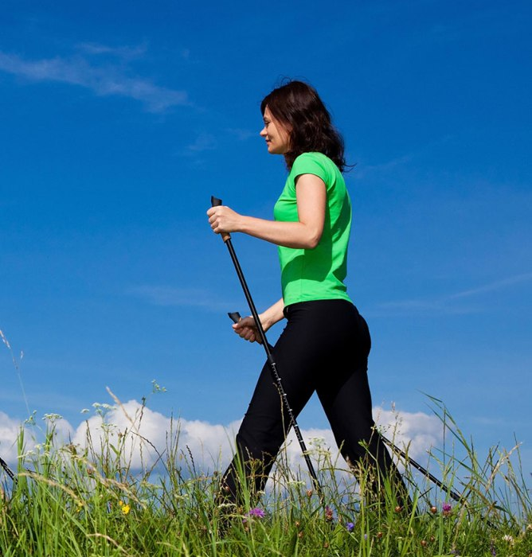

Marsz ze specjalnymi kijkami jest prost±, a za razem bardzo skuteczn± form± rekreacji maj±c± na celu poprawê naszej kondycji.
W porównaniu do zwyczajnego marszu, nordic walking anga¿uje stosowanie si³y do kijków z obu stron, dlatego osoby uprawiaj±ce nordic walking wykonuj± wiêksz± stymulacjê miê¶ni co prowadzi do lepszego ich wzmocnienia.
Wa¿nym czynnikiem jest mo¿liwo¶æ uprawiania w zasadzie przez ka¿dego - bez wzglêdu na wiek, kondycjê czy tuszê. Nordic walking mo¿na uprawiaæ zarówno nad morzem, w lesie, parku czy w górach - przez ca³y rok.
Dobrze jest rozpocz±æ uprawianie nordic walking pod okiem instruktora, który nauczy prawid³owej techniki marszu i pomo¿e dobraæ odpowiednie kije
728-499-708
norbertkuczera@wp.pl
norbertkuczera@wp.pl
